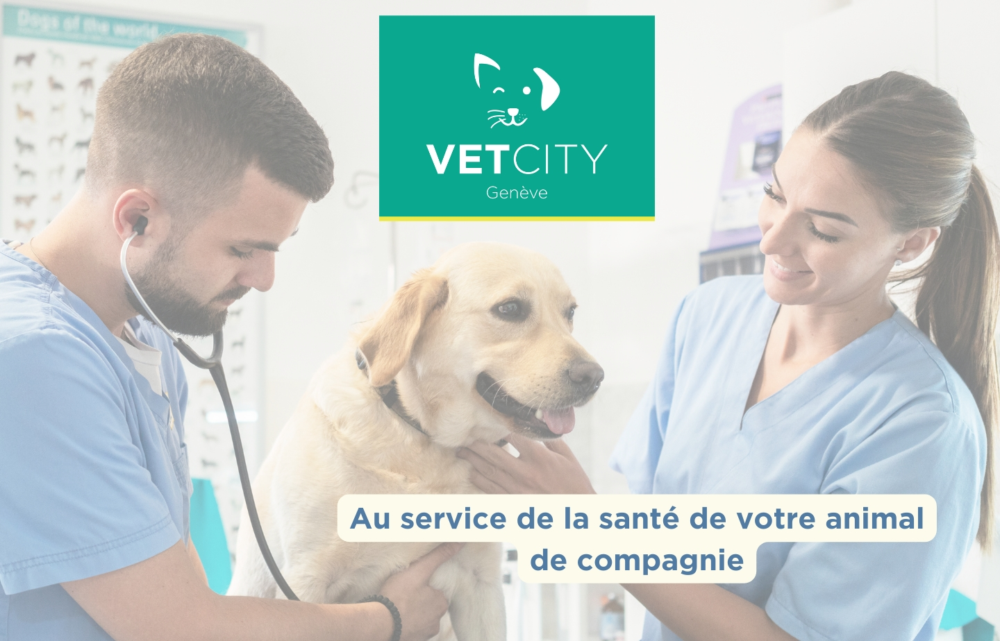
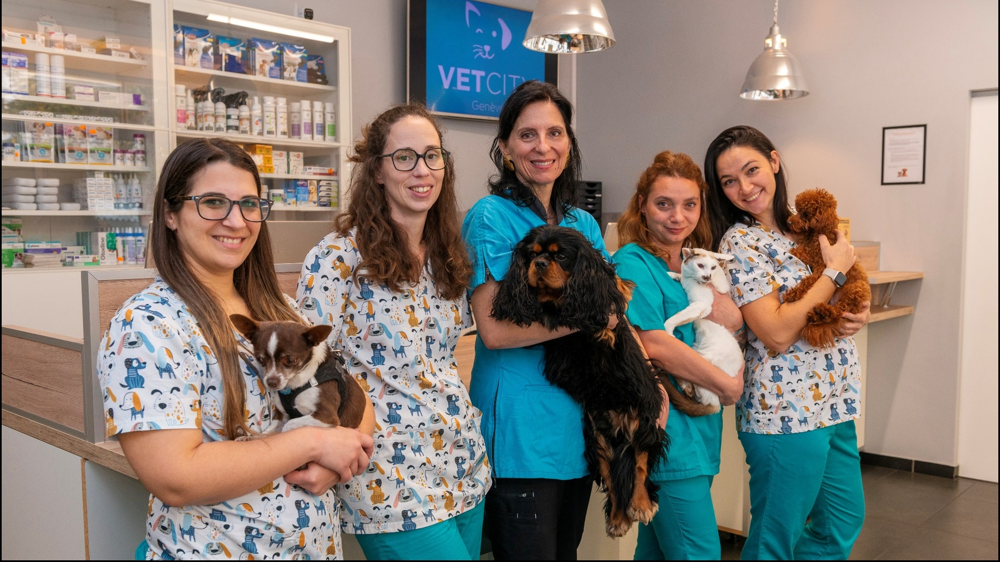
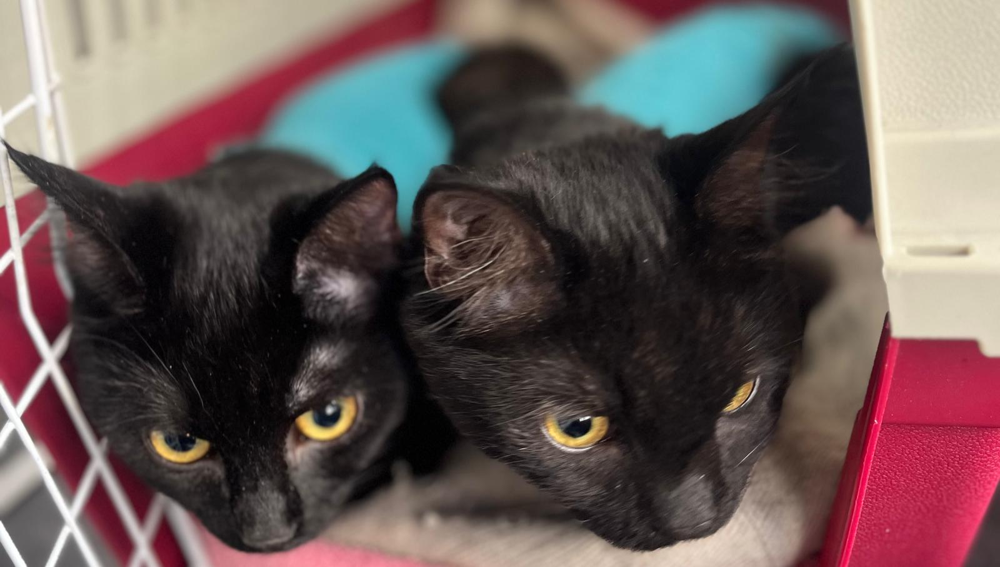
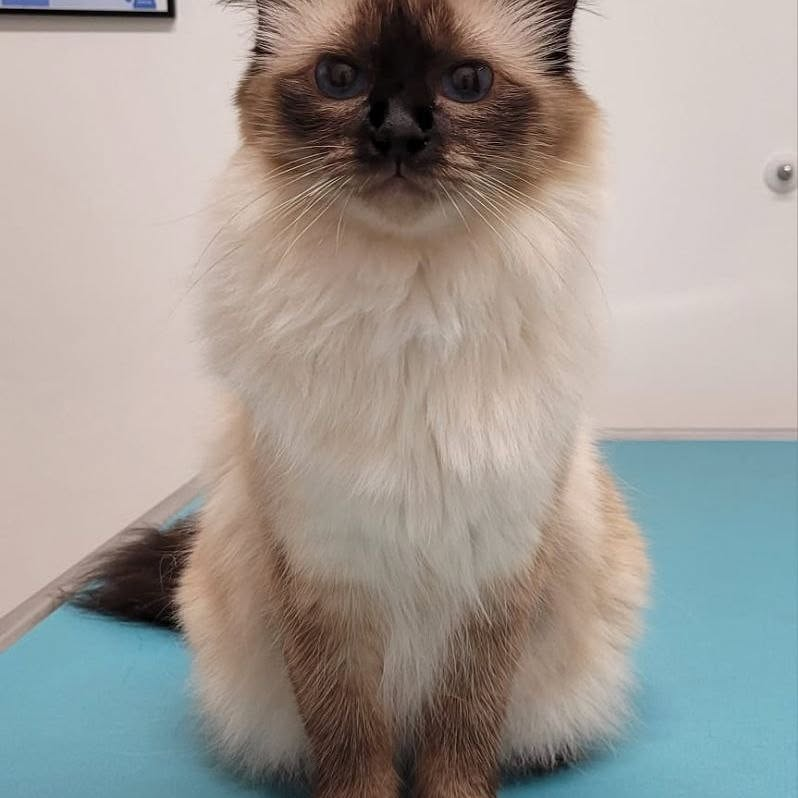
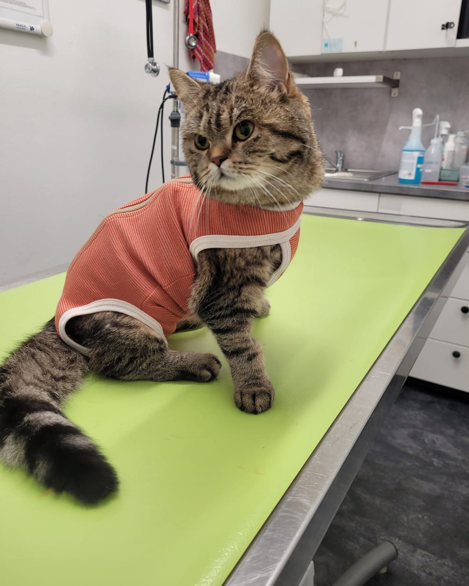
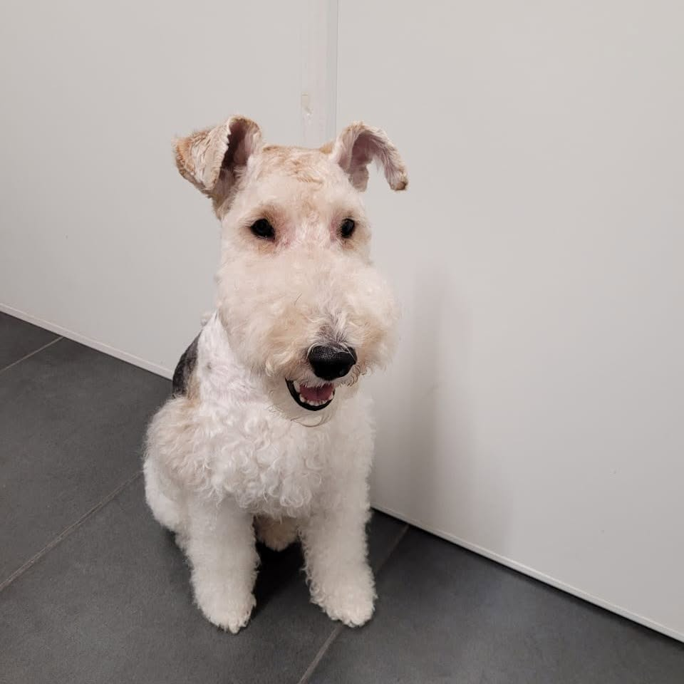
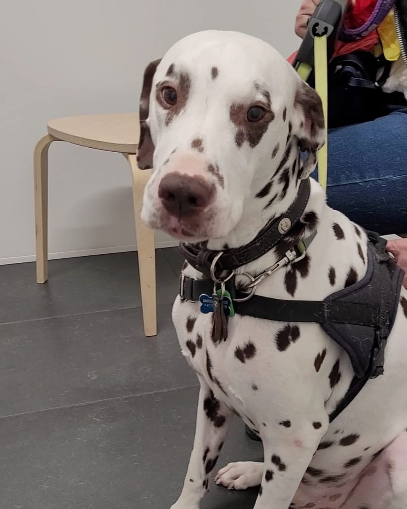

Consultations
Bilans de santé et suivi médical, sur rendez-vous, pour petits et grands compagnons.
Consultations sur rendez-vous, chirurgie, imagerie et urgences 24h/24 — pour chiens, chats et nouveaux animaux de compagnie. Au boulevard Carl-Vogt, depuis 2023.

De la visite de routine à la chirurgie, VetCity réunit la médecine, le diagnostic et les urgences au même endroit — pour ne jamais avoir à courir d’un cabinet à l’autre.
Bilans de santé et suivi médical, sur rendez-vous, pour petits et grands compagnons.
Vaccins, rappels et passeports européens pour voyager l’esprit tranquille.
Pose de puce électronique et enregistrement officiel de votre animal.
Prévention des puces, tiques et vers, adaptée à son mode de vie.
Alimentation sur mesure et régimes diététiques pour chaque étape de la vie.
Un suivi attentif pour accompagner nos patients qui prennent de l’âge.
Stérilisation, castration, chirurgie des tissus mous et orthopédie au bloc opératoire.
Anesthésie surveillée et protocoles adaptés au profil de chaque animal.
Soins hospitaliers et surveillance pour accompagner les convalescences délicates.
Détartrage, soins et extractions pour une bouche saine et sans douleur.
Radiographie numérique pour un diagnostic rapide et précis.
Analyses de sang et de laboratoire, avec des résultats au cabinet.
Allergies, démangeaisons et affections de la peau et du pelage.
Prise en charge des maladies internes, de la gynécologie et de la reproduction.
Urgences gérées en interne en journée ; le soir, la nuit et les jours fériés, le relais est assuré par notre partenaire EVC.
Lapins, rongeurs, oiseaux et reptiles : une médecine pensée pour les nouveaux animaux de compagnie.
Une pharmacie complète : les médicaments de votre animal délivrés sur place.
Une approche homéopathique, en complément des soins classiques.
Les tarifs sont communiqués à la clinique — aucun prix n’est publié en ligne. N’hésitez pas à nous appeler pour une estimation. Liste indicative, susceptible d’évoluer. Cartes acceptées (Visa, Mastercard, American Express, Maestro, PostFinance) et espèces ; devises étrangères acceptées (EUR, GBP, USD).
VetCity est né en octobre 2023 de la transformation complète de l’ancien cabinet du boulevard Carl-Vogt, en plein cœur de la Jonction.
Pensée pour les chiens, les chats et les nouveaux animaux de compagnie, la clinique réunit consultations, chirurgie, imagerie et laboratoire dans un même lieu lumineux — pour des soins continus, sans renvoyer votre animal d’un cabinet à l’autre.
Membre du réseau SwissVet Group, VetCity assure des urgences 24h/24 et accueille ses patients dans plusieurs langues. L’objectif est simple : une médecine sérieuse, un accueil chaleureux, et le moins de stress possible — pour eux comme pour vous.
— L’équipe VetCity

Quelques compagnons croisés au fil des consultations — des plus calmes aux plus joueurs, tous repartis sur leurs quatre pattes.





À la Jonction, à deux pas du Rhône et de l’Arve. Voici quand nous sommes ouverts et comment venir.
Consultations sur rendez-vous uniquement. Urgences assurées 24h/24 — les horaires peuvent varier les jours fériés, appelez-nous avant de venir.
Un rendez-vous, un conseil, un mot pour l’équipe ? Laissez-nous un message ou appelez la clinique. En cas d’urgence, téléphonez-nous directement — nous sommes joignables 24h/24.